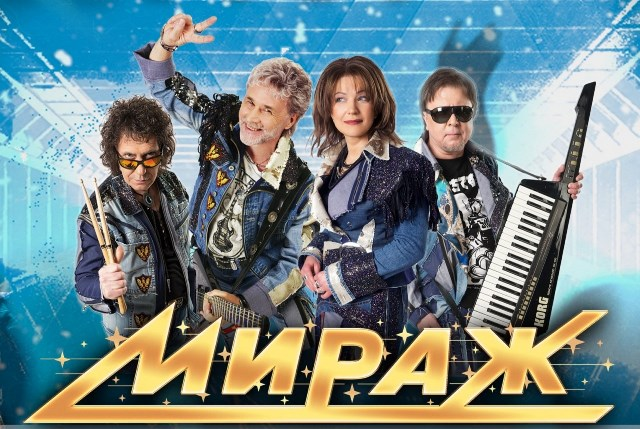

О группе
Группа Мираж — легенда российской поп-музыки. Основанная в 1986 году, она стала одной из самых популярных музыкальных групп своего времени.
Состав группы менялся на протяжении лет, но её музыка продолжает вдохновлять миллионы слушателей.